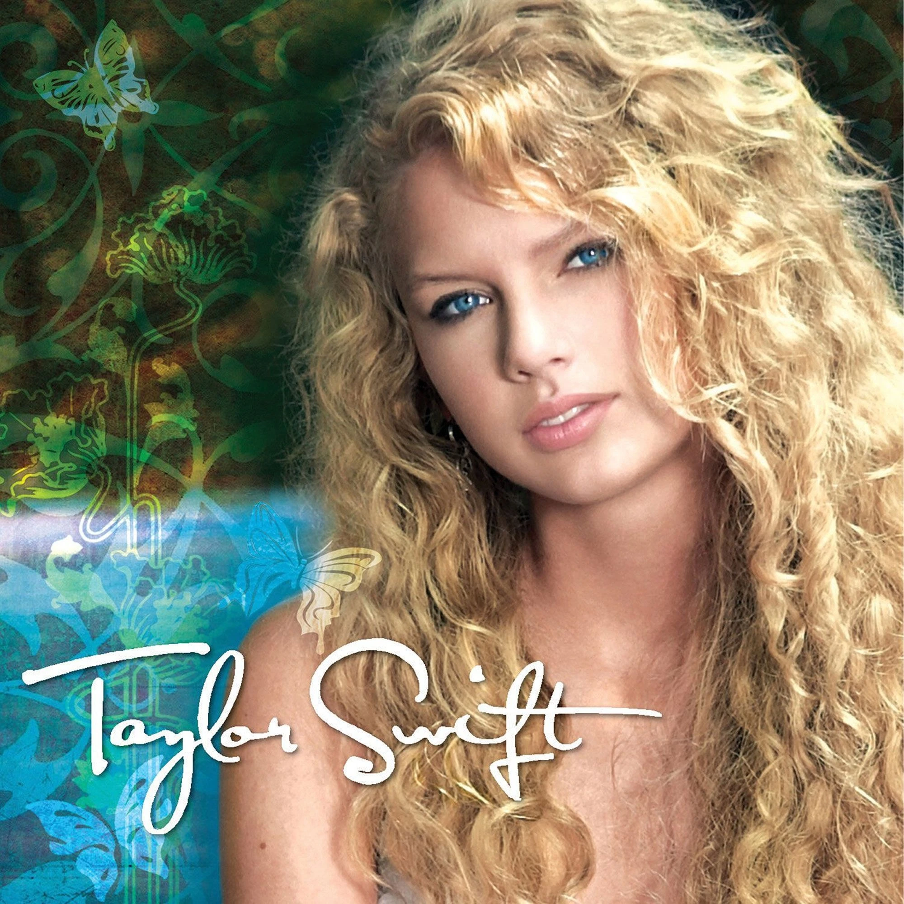
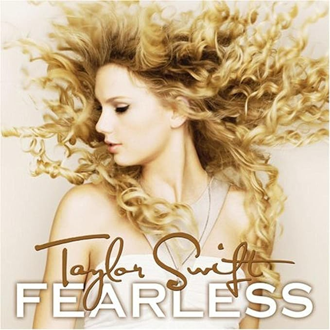
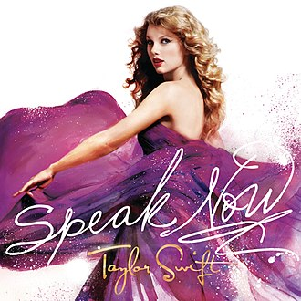
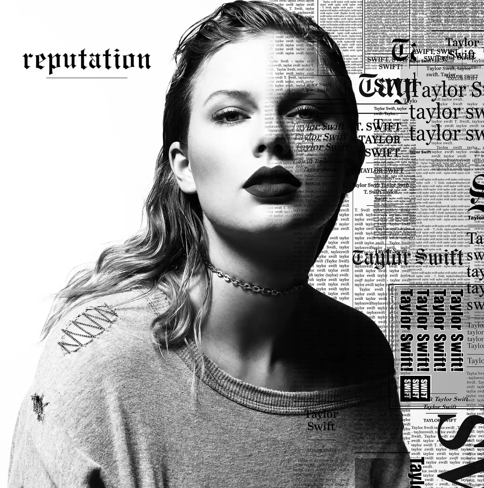
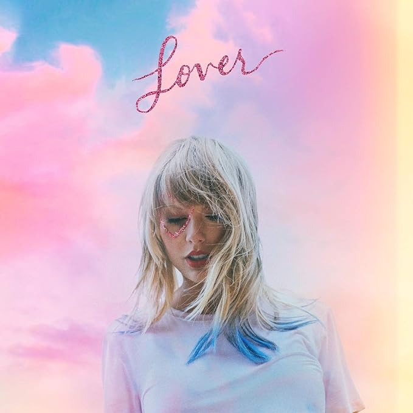
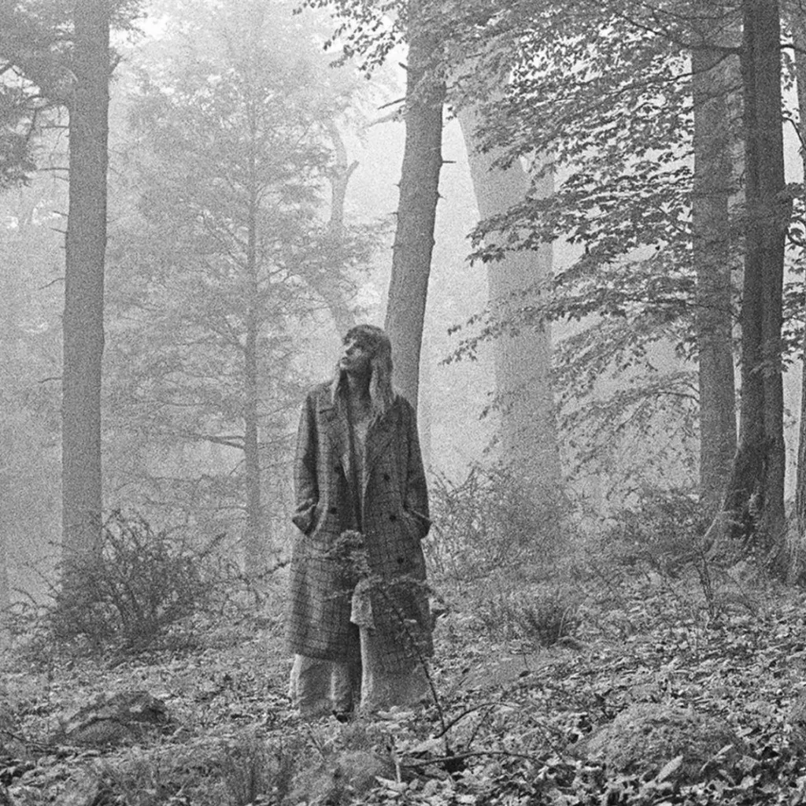

Biografia
Taylor Alison Swift nasceu no dia 13 de dezembro de 1989 em Reading, Pensilvânia. É a filha mais velha do corretor da bolsa de valores Scott Swift
e da dona de casa Andrea Swift, e foi criada ao lado do seu irmão mais novo, Austin Swift, em uma fazenda de cultivo de árvores de Natal na cidade interiorana de Reading, Pensilvânia.
Quando estava na quarta série, Taylor venceu um concurso nacional de poesia com um poema de três páginas chamado “Monster In My Closet” (Monstro em meu Closet).
Já aos 10 anos, influenciada ao meio artístico por
seus ídolos, como LeAnn Rimes, Shania Twain, Faith Hill e sua avó que era cantora de ópera, Taylor começou a se apresentar
em shows de karaokê, festivais e feiras na cidade onde morava.
Nesta época Taylor afirma ter sofrido “bullying” na escola que frequentava porque as outras crianças não estavam acostumadas com o seu gosto pela música country e com o seu desejo
de se tornar uma cantora profissional. Inclusive, em sua música “The Best Day” ela trata desse período difícil e comenta como o apoio de sua mãe ajudou a superar as dificuldades.
Com apenas 11 anos convenceu seus pais a fazerem uma viagem até Nashville, a capital da música country, após assistir em um documentário em que mostrava Faith Hill sendo descoberta
na capital do Tennessee.
Sua mãe parava o carro em frente às grandes gravadoras e uma pequena Taylor entregava um CD contendo algumas músicas demo gravadas em estúdio pedindo,
ingenuamente, pare que ligassem para ela se estivessem interessados.
Após seus pais perceberem que ela não desistiria de realizar seu sonho, eles começaram a fazer visitas regularmente à Nashville, até que aos 14 anos de idade a família Swift
mudou-se de vez para uma casa espaçosa próxima a um lago em Hendersonville, um dos subúrbios da capital da música country.
Todos os dias depois da escola, Taylor ia ao centro da cidade e escrevia músicas com co-escritores locais pela Sony/VGA, seu primeiro emprego no mundo da música.
Quando tinha 15 anos, Taylor assinou um contrato de desenvolvimento e experiência com a famosa gravadora RCA com validade de um ano.
Contudo, quando a gravadora resolveu prolongar seu contrato de desenvolvimento em vez de gravar suas composições, Taylor decidiu não continuar com a RCA e rompeu o contrato.
Em 2005 Taylor teve a chance de se apresentar no ‘The Bluebird Café’, lugar tradicional em Nashville em que vários compositores costumam se apresentar todas as noites.
Ela chamou a atenção de Scott Borchetta, que estava abrindo sua nova gravadora independente. Borchetta a convidou para ser sua primeira aposta na
Big Machine Records permitindo que ela escrevesse suas próprias músicas, sendo esta a gravadora de Taylor até hoje.
Carreira
2004—2008: Início da carreira e Taylor Swift
O primeiro single de Taylor Swift, Tim McGraw, foi lançado no verão de 2006 e seu álbum de estreia (Taylor Swift)
foi lançado no dia 19 de junho de 2006.
Swift escreveu e coescreveu todas as canções de seu álbum, que estreou na parada Billboard 200 na posição 19
e vendeu mais de 67 mil cópias na primeira semana.
Em seguida, chegou à primeira posição da parada Billboard Top Country Albums e em quinto lugar na Billboard 200.
Mesmo assim, o álbum ocupou a primeira posição das paradas de country durante oito semanas consecutivas. No total, ela ficou no topo das listas por 24 semanas, junto com as
Dixie Chicks e com Carrie Underwood, que também são as únicas artistas country, nesta década, que ficaram no topo das paradas por mais de 20 semanas.
Vendeu até agora mais de cinco milhões de cópias.

O single chegou à 6ª posição na semana de 27 de junho de 2007.
O clipe da canção estabeleceu um recorde
ao aparecer por 30 semanas consecutivas no GAC's fan-voted weekly Top 20 music e atingiu o
1º lugar nas
paradas de clipes da CMT. O vídeo fez Swift ganhar o prêmio de Breakthrough Video of the Year no CMT Music Awards 2007.
Ficou na 6ª posição na parada de country da Billboard e na 40ª posição na Billboard Hot 100.
Em 15 de maio de 2007, Swift cantou sua canção Tim McGraw nas premiações da ACM (Academy of Country Music),
onde estava o próprio Tim McGraw.
O segundo single de Taylor Swift, Teardrops on My Guitar, foi lançado em 24 de Fevereiro de 2007.
A canção foi inspirada por um evento real, durante o colegial, quando ela gostava de um garoto chamado Drew Hardwick,
mas ele via Swift apenas como uma amiga e como uma pessoa para ir pedir conselhos sobre o relacionamento com sua namorada.
Ela escutou "através de uma fonte confidencial" que Drew está bem consciente de que a canção foi escrita sobre ele.
Chegou à posição mais alta no verão de 2007, quando foi remixado com um ritmo mais pop e alcançou a 2ª
posição na parada de country da Billboard e a 13ª posição na Billboard Hot 100.
Em outubro de 2007, conseguiu o prêmio da Associação de Compositores de Nashville, como a melhor cantora e compositora do ano;
sendo assim a cantora mais jovem da história da Associação a ganhar.
Em 7 de novembro de 2007, foi lançado à venda o terceiro single, Our Song,
que chegou à primeira posição nas paradas de country por seis semanas, começando na semana de
22 de dezembro de 2007, tendo subido desde a sexta posição.
Isso foi o maior pulo ao número um desde janeiro de 1998, quando Tim McGraw, com Just to See You Smile,
também pulou de #6 para #1.
Our Song chegou à 16ª posição na Billboard Hot 100 e à 24ª posição na Billboard Pop 100.
2008—2010: Fearless e atuação
O segundo álbum de estúdio de Swift, Fearless, foi lançado em 11 de novembro de 2008.
O single principal, Love Story, foi lançado em setembro de 2008.
Chegou ao número quatro na Billboard Hot 100 e número um na Austrália.
Mais quatro singles foram lançados ao longo de 2008 e 2009:
White Horse,You Belong with Me, Fifteen e Fearless.
You Belong With Me foi o single com maior número de álbuns na Billboard Hot 100, alcançando o número dois.
O álbum estreou no número um na Billboard 200 e foi o álbum mais vendido de 2009 nos Estados Unidos.
A primeira turnê de shows de Swift, a Fearless Tour, promoveu o álbum e arrecadou mais de US$ 63 milhões.
Journey to Fearless, uma minissérie de documentários em três partes, foi ao ar na televisão e depois lançado em DVD e Blu-ray.
Swift também se apresentou como um ato de abertura à turnê mundial Escape Together de Keith Urban.

Em 2009, o videoclipe de You Belong with Me foi nomeado Melhor Vídeo Feminino no MTV Video Music Awards de 2009.
Onde teve seu discurso interrompido pelo rapper Kanye West, um incidente que se tornou objeto de controvérsia, atenção generalizada da mídia e
muitos memes da Internet.
Naquele ano, Swift ganhou cinco American Music Awards, incluindo Artista do Ano e Álbum de Country Favorito.
Foi nomeada pela Billboard como Artista do Ano de 2009.
O álbum ficou em 99º lugar na lista da NPR de 2017 dos 150 maiores álbuns feitos por mulheres.
No Grammy Awards de 2010, Fearless foi nomeado em Álbum do Ano e Melhor Álbum Country,
eWhite Horse foi nomeado em Melhor Canção Country e Melhor Performance Vocal Country Feminina.
Swift foi a artista mais jovem a vencer o prêmio de Álbum do Ano.
Durante a cerimônia, Swift cantou You Belong With Me e Rhiannon com Stevie Nicks,
uma performance que recebeu críticas negativas e causou reação da mídia.
Jon Caramanica, do The New York Times, considerou "refrescante ver alguém tão talentoso fazer um palavrão ocasional"
e descreveu Swift como "a nova estrela pop mais importante dos últimos anos".
Swift se tornou a artista mais jovem a ser nomeada Artista do Ano pela Country Music Association (CMA).
Fearless também ganhou o prêmio CMA Album of the Year.
2010—2014: Speak Now e Red
Em agosto de 2010, Swift lançou Mine, o single principal de seu terceiro álbum de estúdio, Speak Now.
Ele entrou nas paradas dos EUA no número três, tornando Swift a segunda artista feminina na história do Hot 100
(depois de Mariah Carey) a estrear várias faixas entre as cinco melhores em um ano; a outra era "Today Was a Fairytale" no número dois.
Swift escreveu o álbum sozinho e coproduziu todas as faixas.
Speak Now, lançado em 25 de outubro de 2010, foi um sucesso comercial, estreando no número um na Billboard 200 e se
tornando o 16º álbum na história das paradas a alcançar vendas na semana de abertura de um milhão de cópias.

Três dos singles do álbum, Mine, Back to December e Mean, alcançaram o top 10 no Canadá, enquanto nos EUA,
os dois primeiros, juntamente com a faixa-título, alcançaram o top 10 Hot 100.
Mais tarde, em 2010, ela namorou brevemente o ator Jake Gyllenhaal.
Mean ganhou as duas indicações que concorria na 54° edição do Grammy Awards, o de "Melhor Música Country" e "Melhor Performance Country Solo".
Taylor também cantou Mean na premiação, com um visual rural.
Jayme Deerwester, do USA Today, escreveu que as críticas em 2010 pareciam ter "a tornado uma melhor compositora e artista ao vivo".
Swift ganhou outros prêmios por Speak Now, incluindo compositora/artista do ano pela Nashville Songwriters Association (2010 e 2011),
Mulher do ano pela Billboard (2011), e artista do ano pela Academy of Country Music (2011 e 2012)
e pela Country Music Association em 2011.
No American Music Awards de 2011, Swift ganhou Artista do Ano e Álbum de Country Favorito.
A Rolling Stone colocou o Speak Now no número 45 em sua lista de 2012 dos "50 melhores álbuns femininos de todos os tempos",
escrevendo: "Ela pode ser tocada na estação country, mas é uma das poucas estrelas do rock genuínas que temos hoje em dia".
A Speak Now World Tour foi realizada de fevereiro de 2011 a março de 2012 e arrecadou mais de US $123 milhões.
Em novembro de 2011, Swift lançou seu primeiro álbum ao vivo, Speak Now: World Tour Live.
No mês seguinte, ela contribuiu com duas músicas originais para o álbum da trilha sonora do filme
Jogos Vorazes: Safe & Sound, coescrito e gravado com os The Civil Wars e T-Bone Burnett, e Eyes Open.
Safe & Sound ganhou o prêmio de Song Writter for Visual Media na 55ª edição do Grammy Awards
em 2013 e também foi indicado ao Globo de Ouro de Melhor Canção Original.
Swift contribuiu com os vocais do rapper B.o.B, Both of Us, lançado em maio de 2012.
De julho a setembro de 2012, Swift namorou o herdeiro político Conor Kennedy.
Em agosto, Swift lançou We Are Never Ever Getting Back Together, o single principal de seu quarto álbum de estúdio, Red.
Tornou-se seu primeiro número um nos EUA e na Nova Zelândia e alcançou o primeiro lugar no ranking de vendas de músicas digitais
do iTunes 50 minutos após seu lançamento, se tornando a música que vendeu mais rápido da história digital.
Swift lançou o segundo single do álbum, Begin Again, em outubro.
Chegou ao número sete na Billboard Hot 100.

I Knew You Were Trouble foi um grande sucesso comercial, chegando ao número dois nos Estados Unidos.
O Red foi lançado em 22 de outubro de 2012, incorporando novos gêneros para o Swift,
como heartland rock, dubstep e dance-pop.
O álbum foi um sucesso crítico e comercial e estreou no número um na Billboard 200, com vendas na primeira semana de 1,21 milhão de cópias.
Isso marcou as maiores vendas de abertura em uma década nos Estados Unidos, e fez de Swift a primeira mulher a ter dois milhões de lançamentos de álbuns,
um recorde reconhecido pelo Guinness Book
A
com todos os 18.000 ingressos vendidos em 60 segundos.
Red ganhou vários elogios, incluindo quatro indicações ao Grammy Awards de 2014.
Seu single I Knew You Were Trouble ganhou o prêmio de Melhor Vídeo Feminino no MTV Video Music Awards de 2013.
Swift foi nomeada Melhor Artista Country Feminina no American Music Awards de 2012 e Artista do Ano na cerimônia de 2013.
Ela recebeu o prêmio Compositora/Artista da Nashville Songwriters Association pelo quinto e sexto anos consecutivos em 2012 e 2013.
Swift também foi homenageada pela Associação com um Pinnacle Award especial, fazendo dela a segunda recebedora do prêmio depois de Garth Brooks.
Durante esse período, ela teve um relacionamento de curto prazo com o cantor britânico Harry Styles.
2014—2017: 1989
Em março de 2014, Swift se mudou para Nova York.
Nessa época, ela estava trabalhando em seu quinto álbum de estúdio, 1989, com os corroteristas
Antonoff, Max Martin, Shellback, Imogen Heap, Ryan Tedder e Ali Payami.
Ela promoveu o álbum através de várias campanhas, inclusive convidando fãs para sessões secretas de audição de álbuns.
Creditado como seu "primeiro álbum pop oficial e documentado", marcou uma nova fase da carreira.
O álbum foi lançado em 27 de outubro de 2014, com críticas positivas.

1989 vendeu 1,28 milhão de cópias nos EUA durante a primeira semana de
seu lançamento e estreou no topo da Billboard 200.
Isso fez da Swift a primeira artista a ter três álbuns vendendo mais de um milhão de cópias na semana de abertura, pela qual entrou no Guinness World.
No final de 2014, ela se tornou o primeiro ato desde os Beatles a ter quatro álbuns de estúdio consecutivos registrando pelo menos seis semanas no topo da Billboard 200.
Em junho de 2017, 1989 havia vendido mais de 10 milhões de cópias em todo o mundo.
O single principal, Shake It Off, foi lançado em agosto de 2014 e estreou no número um na Billboard Hot 100.
O álbum gerou dois singles número um adicionais - Blank Space e Bad Blood (com Kendrick Lamar) -, bem como as dez primeiras entradas Style e Wildest Dreams,
e outros singles como Out of the Woods e New Romantics.
Shake It Off, Blank Space e Bad Blood também lideraram as paradas na Austrália e no Canadá.
Depois que Blank Space alcançou o número um nos EUA imediatamente após Shake It Off, Swift se tornou a primeira mulher
na história do Hot 100 a ter sucesso substituindo o outro no primeiro lugar.
O videoclipe de Blank Space foi brevemente o vídeo mais rápido a alcançar um bilhão de visualizações no Vevo.
O vídeo de Bad Blood quebrou o recorde de 24 horas do Vevo e conquistou dois troféus
nos MTV Video Music Awards de 2015, incluindo Video of the Year,
A The 1989 World Tour ocorreu de maio a dezembro de 2015, arrecadou mais de US$ 250 milhões,
quebrou vários recordes de turnê e foi a turnê com maior bilheteria do ano.
Swift foi nomeada Mulher do Ano da Billboard em 2014, tornando-se o primeiro artista a ganhar o prêmio duas vezes.
Nesse ano, ela também recebeu o Dick Clark Award for Excellence no American Music Awards.
Em 2015, Swift ganhou o Brit Award para artista solo internacional feminina.
Swift foi um dos oito artistas a receber um prêmio de aniversário de 50 anos no Academy of Country Music Awards de 2015.
Em 2016, ela ganhou três Grammy Awards de Best Pop Vocal Album, Album of the Yeare Best Music Video de Bad Blood.
Ela se tornou a primeira mulher e o quinto ato geral a vencer o primeiro deles duas vezes como artista principal, bem como o primeiro ato a fazê-lo com álbuns de diferentes gêneros.
2017—2018: Reputation
Em agosto de 2017, Swift processou e venceu um julgamento civil contra David Mueller, uma ex-personalidade de programa matutino da KYGO-FM de Denver.
Quatro anos antes, Swift informara os chefes de Mueller de que ele a atacara sexualmente, apalpando-a em um evento.
Depois de ser demitido, Mueller acusou Swift de mentir e processou-a por fazê-lo perder o emprego.
Pouco depois, Swift contra-processou por agressão sexual. O júri rejeitou as alegações de Mueller e decidiu em favor de Swift.
Swift depois limpou suas contas de redes social e lançou Look What You Made Me Docomo o single principal de seu sexto álbum,
Reputation.

Seu videoclipe ganhou mais de 43,2 milhões de visualizações durante seu primeiro dia no YouTube, quebrando o recorde do site de videoclipe mais visto em 24 horas.
Em outubro, Swift lançou o segundo single do álbum, ...Ready for It?, que ficou em terceiro lugar na Austrália e em número quatro nos Estados Unidos.
Dois singles promocionais foram lançados do Reputation, Gorgeous e Call It What You Want. Gorgeous mais tarde se tornou o quinto single do álbum na Europa.
O álbum foi lançado em novembro e vendeu 1,21 milhão de cópias nos Estados Unidos, tornando-se o álbum mais vendido do país em 2017.
Com essa conquista, ela se tornou o primeiro ato a ter quatro álbuns que vendem um milhão de cópias em uma semana nos EUA.
O álbum liderou as paradas em vários países, incluindo EUA, Reino Unido, Austrália e Canadá.
As vendas mundiais da primeira semana totalizaram dois milhões de cópias.
Reputation viu Swift tomar uma nova direção, musicalmente;
o álbum é conhecido por seu som mais urbano e influências de hip hop e EDM.
Mais tarde naquele mês, Swift tocou ... Ready for It? e Call It What You Want no Saturday Night Live.
End Game, com Ed Sheeran e o rapper Future, seguiu em novembro como o terceiro single e alcançou o número 18 nos EUA.
Outros singles do álbum incluem New Year's Day, lançado exclusivamente para a rádio country, e o hit Delicate.
Em abril de 2018, Swift apareceu em Babe, do Sugarland.
Em apoio à Reputation, ela embarcou em sua aclamada pela crítica Reputation Stadium Tour de maio a novembro de 2018.
A turnê quebrou vários recordes de presença no local e ganhos brutos nos EUA, recebendo US$ 266,1 milhões e vendendo mais de dois milhões de ingressos.
Swift quebrou seu próprio recorde para a turnê doméstica de maior bilheteria por uma mulher, bem como o recorde da turnê norte-americana de maior bilheteria da história.
Em todo o mundo, a turnê arrecadou US$ 345,7 milhões, fazendo dela a segunda turnê de concertos com maior bilheteria do ano.
No American Music Awards de 2018, Swift venceu a Turnê do Ano, Artista do Ano, Artista Feminina Pop/Rock Favorita e Álbum Pop/Rock Favorito.
Com um total de 23 prêmios, ela se tornou a artista feminina mais premiada da história do AMA, um recorde anteriormente mantido por Whitney Houston.
2018—2021: Lover, Folklore e Evermore
Em abril de 2019, Swift lançou "Me!", com Brendon Urie do Panic! at the Disco como primeiro single do seu sétimo álbum de estúdio, Lover.
A canção debutou em cem na Billboard Hot 100 e três dias depois saltou para dois, sendo o maior salto em uma semana na história da parada.
O vídeo clipe quebrou o recorde da Vevo, bem como o do YouTube, de mais visualizações de um vídeo de uma cantora nas primeiras 24 horas com 65,2 milhões de visualizações.
No entanto, a música recebeu críticas mistas e Swift removeu uma letra "muito difamada" da música do álbum.
Em junho, ela lançou o segundo single You Need to Calm Down que estreou e alcançou o número dois na Billboard Hot 100.
Em julho, ela lançou o single promocional do álbum, The Archer.
A faixa-título foi lançada como terceiro single do álbum, e tornou-se o seu terceiro single consecutivo a estrear no Top 10 da Hot 100.
Lover foi lançado em 23 de agosto de 2019 e vendeu cerca de 867.000
unidades nos Estados Unidos na primeira semana, sendo 679.000 em vendas puras, fazendo com que o
álbum estreasse em primeiro lugar na Billboard 200 e tornando Swift a primeira artista feminina a ter seis álbuns
vendendo mais de 500.000 cópias em uma única semana.

Todas as 18 faixas do álbum foram mapeadas simultaneamente nas paradas da Billboard Hot 100, quebrando recordes com mais entradas simultâneas
no Hot 100 por uma artista feminina e maior quantidade de estreias simultâneas do Hot 100 por uma artista feminina.
Swift promoveu o álbum e seus singles em várias apresentações ao vivo.
Em 1 de maio de 2019, Swift fez a primeira apresentação ao vivo do single Me! no Billboard Music Awards de 2019, com Brendon Urie, em Las Vegas, nos Estados Unidos.
Swift e Urie cantaram a canção novamente no final da décima sexta temporada de The Voice, em 21 de maio.
Swift cantou
Em 24 de maio, ela apareceu no talk show britânico The Graham Norton Show, como uma convidada musical, cantando
Em 25 de maio, Swift cantou
No MTV Video Music Awards de 2019, os vídeos de Me! e You Need to Calm Down receberam doze indicações.
Me! venceu a categoria de melhores efeitos visuais e You Need to Calm Down venceu as de Vídeo do ano - tornando Swift a primeira
mulher e a segunda artista geral a ganhar o prêmio por um vídeo que codirigiu - e Vídeo do Bem.
Swift foi o ato de abertura na cerimônia de premiação. Até o final de 2019, Lover se
tornou o álbum físico mais vendido do ano nos EUA e o álbum mais vendido por uma artista feminina em todo o mundo.
Em 2020, Swift lançou dois álbuns surpresa, sem focar muito em suas promoções.
O primeiro, seu oitavo álbum de estúdio Folklore, foi lançado em 24 de julho.
O segundo, seu nono álbum de estúdio Evermore, foi lançado em 11 de dezembro.
Swift escreveu e gravou os álbuns enquanto estava isolada durante a pandemia de COVID-19,
trabalhando com os produtores Jack Antonoff e Aaron Dessner, membro da banda The National.
Ambos os álbuns incluem colaborações com Bon Iver, e Evermore apresenta colaborações com The National e Haim.
O namorado de Swift, Joe Alwyn, co-escreveu e coproduziu algumas músicas de ambos os álbuns sob o pseudônimo de William Bowery.
A produção do Folklore foi discutida no documentário Folklore: The Long Pond Studio Sessions,
dirigido por Swift e lançado em 25 de novembro.

Descritos por Swift e Dessner como "gravações irmãs", ambos os álbuns abraçam o folk indie e o rock alternativo,
deixando de lado os lançamentos pop otimistas anteriores da cantora.
Nos EUA, Folklore e Evermore contaram com três singles
cada um - um para rádio mainstream, um para rádio country e um para a rádio triple A.
Os singles, respectivamente, foram Cardigan, Betty, Exile (com Bon Iver); e
Willow, No Body, No Crime (com Haim) e Coney Island (com The National).
Na Alemanha, Folklore foi apoiado por outro single, The 1.
Os singles principais de cada álbum, Cardigan e Willow, estrearam no topo da Billboard Hot 100
na mesma semana em que seus respectivos álbuns estrearam no topo da Billboard 200, fazendo com que Swift se
tornasse a primeira artista a estrear no topo das paradas de singles e álbuns dos EUA simultaneamente.
Cada álbum vendeu mais de um milhão de unidades em todo o mundo em sua primeira semana, com Folklore vendendo dois milhões.
Folklore quebrou o Recorde Mundial do Guinness para o maior número de
streams em um álbum no primeiro dia de uma artista feminina no Spotify, com mais de 80,6 milhões de reproduções,
além de ter sido o álbum mais vendido de 2020 nos EUA, com 1,2 milhão de cópias vendidas.
Swift foi a musicista mais bem paga de 2020 nos EUA e a cantora solo melhor paga em todo o mundo.
No American Music Awards de 2020, Swift ganhou três prêmios, incluindo Artista do Ano pela terceira vez consecutiva.
Folklore ganhou Álbum do Ano no 63º Grammy Awards, tornando Swift a primeira mulher na história a ganhar a categoria três vezes.

Algumas Conquistas
| Ano | Categoria | Recipientes |
|---|---|---|
| 2010 | Álbum do Ano | Fearless |
| Melhor Álbum de Country | ||
| Melhor Canção de Country | "White Horse" | |
| Melhor Desempenho Feminino Vocal de Country | ||
| 2012 | Melhor Canção de Country | "Mean" |
| Melhor Desempenho solo de Country | ||
| 2013 | Melhor Canção Composta para Mídia Visual | "Safe & Sound" (ft. The Civil Wars) |
| Melhor Desempenho de Country por uma Dupla ou Grupo | ||
| 2016 | Álbum do Ano | 1989 |
| Melhor Álbum Vocal de Pop | ||
| Melhor Videoclipe | "Bad Blood" (ft. Kendrick Lamar) | |
| 2021 | Álbum do Ano | Folklore |
| 2023 | Melhor Videoclipe | All Too Well: The Short Film |
| 2024 | Álbum do Ano | Midnights |
| Melhor Álbum Vocal de Pop |
| Ano | Recipientes | Categoria |
|---|---|---|
| 2007 | Swift | Revelação do Ano - Cantora |
| 2009 | Fearless | Álbum do Ano |
| Swift | Prêmio Crystal Milestone | |
| 2011 | Prêmio Jim Reeves International | |
| Artista do Ano | ||
| 2012 | ||
| 2014 | "Highway Don't Care (ft. Tim McGraw & Keith Urban) | Melhor Videoclipe do Ano |
| 2015 | Swift | 50° Prêmio Milestone |
| 2022 | All Too Well: The Short Film | Melhor Websérie, Videoclipe ou Comercial |
| Ano | Recipientes | Categoria |
|---|---|---|
| 2013 | Swift | Artista Mundial |
| "Highway Don't Care (ft. Tim McGraw & Keith Urban) | Single Colaborativo do Ano | |
| Videoclipe Colaborativo do Ano | ||
| Canção do Ano | ||
| 2020 | Folklore | Álbum do Ano |
| Melhor Álbum de Folk | ||
| "Cardigan" | Melhor Canção de Folk | |
| "Exile (ft. Bon Iver)" | Melhor Desempenho de Folk | |
| 2008 | Swift | Melhor Cantora de Country |
| 2009 | Artista do Ano | |
| Melhor Cantora de Pop ou Rock |